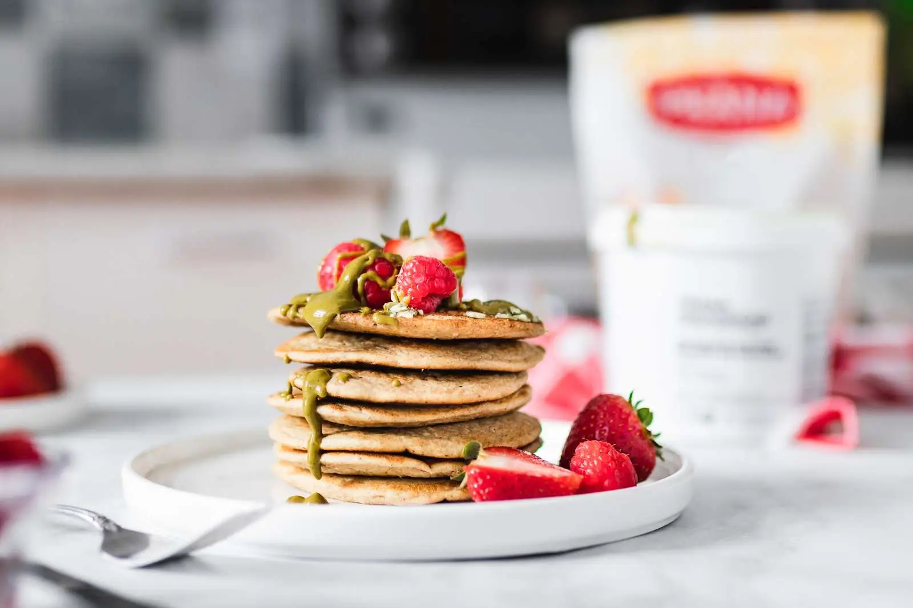

breakfast recipes
Pancakes, chia pudding, oatmeal,
brunch…Explore our breakfast
recipes that are easy to have with
family or for busy mornings.
Discover
appetizers and sides
recipes
Vegan cheese, vegan pate, sweet
potato fries, nachos... Get inspired
by our recipes that are perfect to
share with family and friends!
Discover

soups recipes
Spicy soup or comforting stew…
Allow yourself to be surprised
our classic or a bit more original
soup recipes, all more delicious
from one to the other.
Discover
salad recipes
Refreshing summer salads,
nourishing legume salads…Make
your tastebuds travel with our
salad recipes ideal as appetizers or
as meals.
Discover